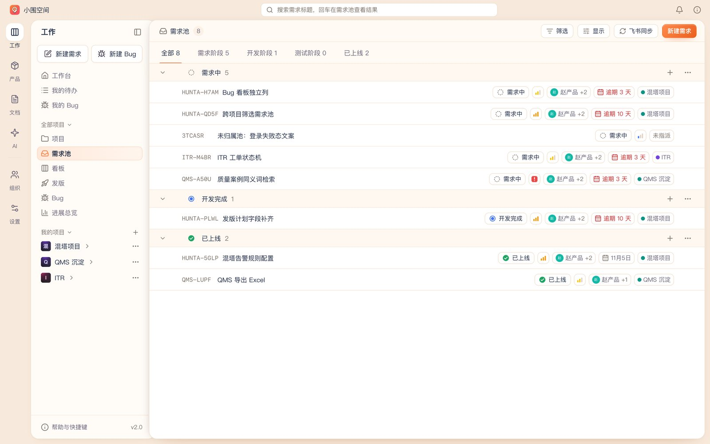
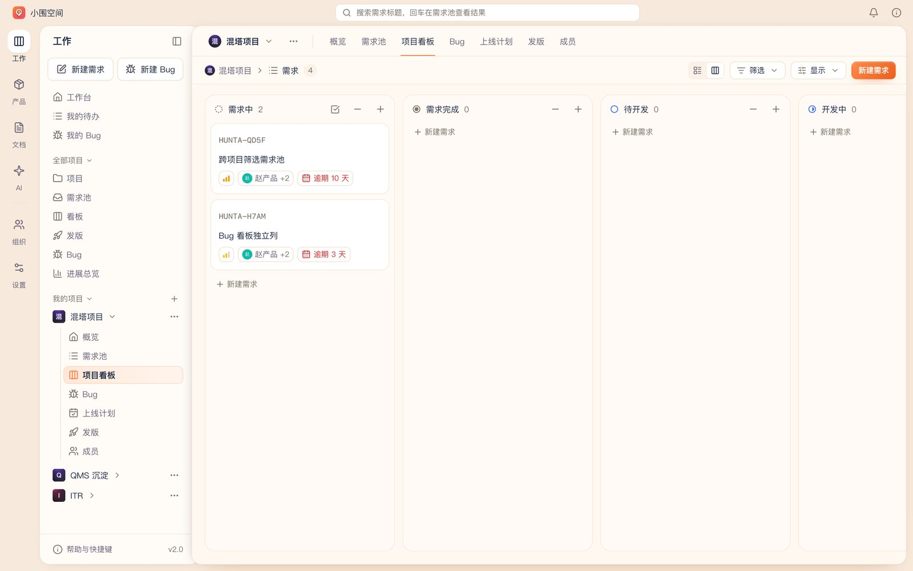
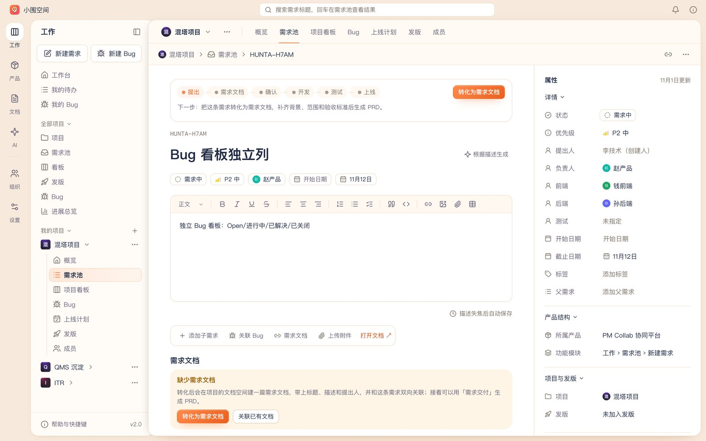
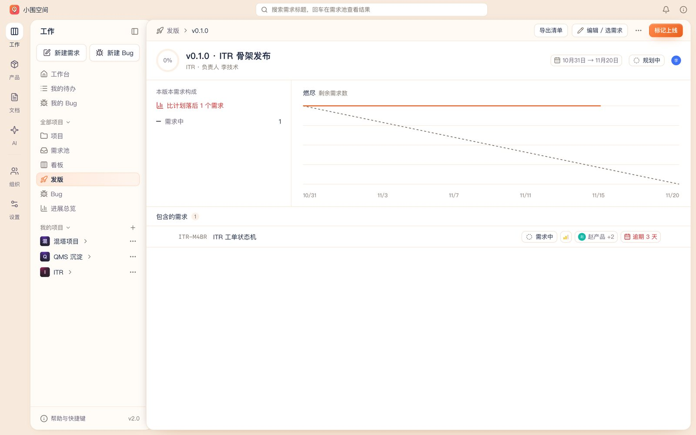
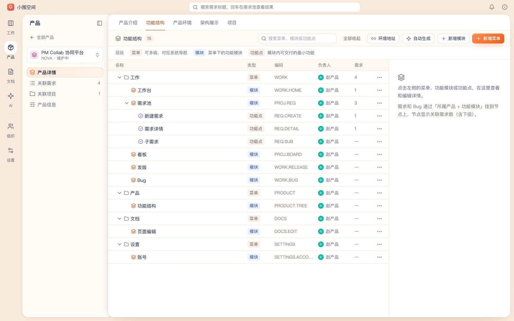
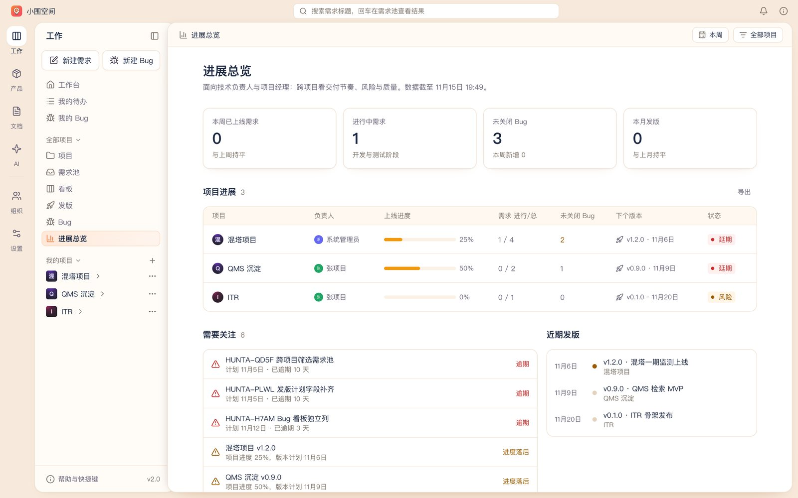
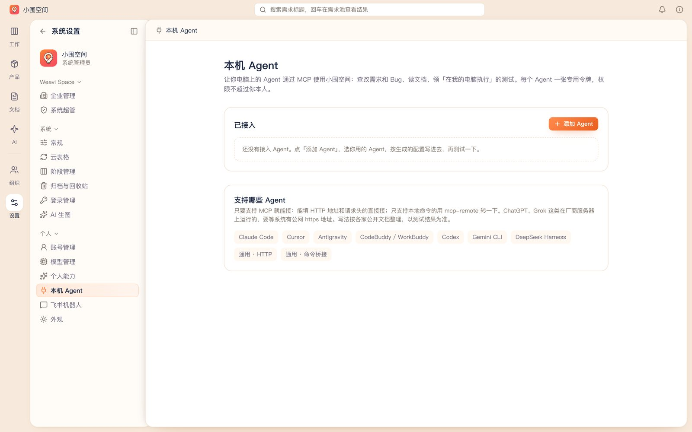
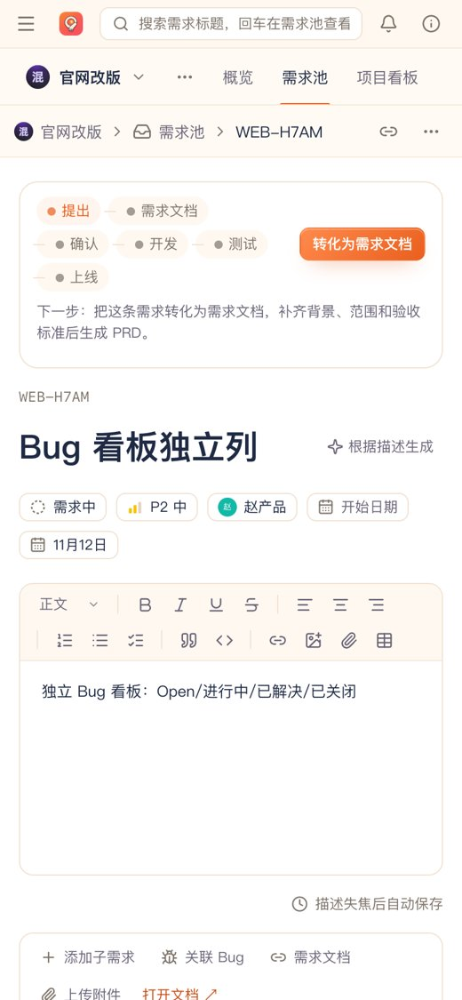
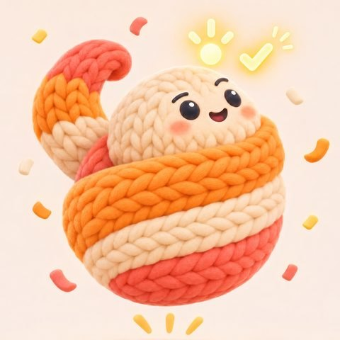

需求全流程
公共池汇总所有项目，项目池只看自己的。
- 看板拖拽改状态，拿起卡片时底部出现全部状态，放进去就改好，还能撤销
- 子需求、评论、富文本描述，配图和附件直接粘贴
- 负责人按岗位从项目成员里选：产品、前端、后端、测试


从一句话想法到上线，需求、文档、测试、发版和 Bug 走在同一条线上。AI 小围全程帮忙，要改数据时先等你点头。

需求进度条告诉你下一步该做什么，不用再在群里追问。
一条线走到底
需求状态只在 4 个关键节点自动往前推：PRD 确认、发起测试、测试全部通过、实现需求全部上线。其余时候由负责的人推进，系统负责提醒。
任何人都能提，进公共需求池或项目需求池。
一键转成需求文档，和需求双向关联。
AI 补背景和验收生成 PRD，按功能点拆成子需求。
AI 写 PRD看板拖拽改状态，可撤销，负责人按岗位挑。
结构化用例，服务器或本机自动执行，失败直接提 Bug。
AI 出用例挂进发版，上线时需求和 Bug 一起收尾。
解决什么问题
核心功能
公共池汇总所有项目，项目池只看自己的。


文档空间按项目划分，页面树、版本发布、画布页都有。
示意数据
规划、冻结、发布、上线，每一步都有人负责。

产品是长期的，项目是阶段性的，两条线分开管。

不同岗位打开工作台，看到的是自己最该关心的事。

数据是你的，接口也是开放的。


AI 小围
小围直接读系统里的需求、Bug、发版和文档，不用你复制粘贴。它能做的事情，不会超过你自己能做的。
「哪些需求已经逾期？」「这周新增了哪些 Bug？」直接回答，带表格。
按你的话建需求、改状态、挂发版。读的直接做，写的先停下来等你确认。
事件触发或定时执行，比如「新 Bug 进来先查重」。每天有次数和预算上限。

内置需求分析、PRD、用户故事、原型图、测试用例等 8 个能力，跟着 GitHub 自动更新。
WEB-H7AM 的状态从「需求中」改为「开发中」，并挂到发版 v1.2.0任何写操作都先挂起，不占模型额度，等你回来点确认；飞书里也能收到提醒。
每个任务最多 30 步、20 万 token，企业可以给成员设每天 / 每周 / 每月定额。
Anthropic、OpenAI 兼容等 9 家厂商，个人或企业的 Key 都行，密文保存。
适合谁
想法到 PRD 少走一半路，需求走到哪一步一目了然。
排期、发版节奏、团队缺人，一页看清，周报自动起草。
只看指派给自己的，拖一下就改状态，用例能自动跑。
各项目进展和风险集中看，账号、权限和 AI 用量都管得住。
开始使用
源码按 AGPL-3.0 开源。Docker 一次起好 Web、PostgreSQL 16 和对象存储，也可以直接装在服务器上。
# 1. 拿到代码 git clone https://github.com/Caffrey-Li/weavi-space.git cd weavi-space # 2. 填好密码和密钥（见 docker/.env.example） cp docker/.env.example docker/.env # 3. 启动，日志里找初始管理员的临时密码 docker compose --env-file docker/.env up -d --build
打开 http://localhost:3000，首次登录会要求改密码。上线前请读仓库里的 docs/SECURITY.md。
公司已经部署好了？三步就能用上。
想先试试 AI？到「设置 · 模型管理」填上自己的 Key，或者让企业管理员配好企业模型。
联系作者
扫码加作者微信，备注「小围空间」。也欢迎在 GitHub 提 Issue 或 PR。